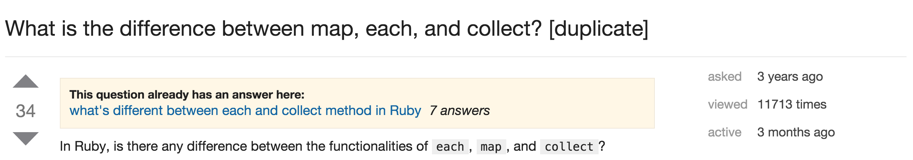
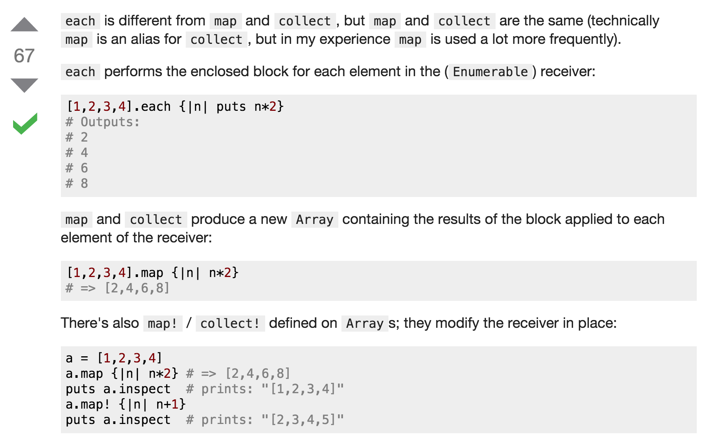

Whether we realize it or not, we ask a countless number of questions throughout the day. Sometimes the questions are for ourselves: "What should I wear?" or "Should I attend my boss's dinner party on Saturday?". Many times they're directed at the others around us: "Did you eat lunch?" or "Which aisle can I find Apple Jacks?". However, we are not always aware of how to ask a good question.
Asking a good question is not as easy as it seems. First, you must clearly identify what you want to ask. Sometimes we start asking questions without knowing clearly what we are unsure of. Secondly, the question must be a succinct summary that states the problem right to the core. You must not blabber on what is extraneous to the topic. To be more specific to programming, you must refrain from copy-and-pasting the entire code. Instead, locate where the problem is and state exactly what you are having trouble with. Here's an example of a good question:

In this example, the person asking the question did not post his entire code. He simply stated a core question that he had trouble understanding. The wording was kept very concise, allowing other users to clearly understand the nature of the question. These are the reasons why a good question will often lead to a good answer. Check out the actual answer on Stack Overflow.

Since the person asked exactly what needed to be answered, each part of his or her question was answered correctly. Therefore, we must always remember what kind of questions we are asking and how we ask them.